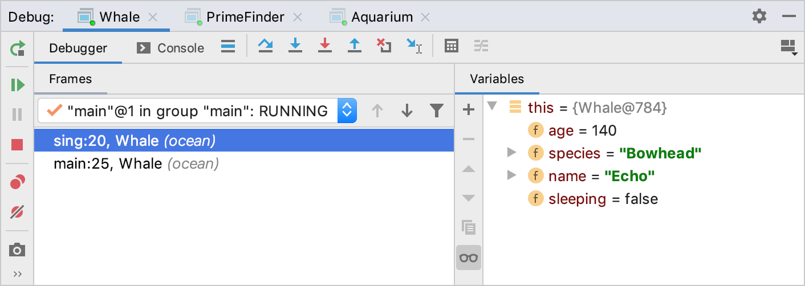

Inheritance and equality
Plain old inheritance
So far, we have seen two ways of using polymorphism in Java: interfaces and abstract classes. In this lesson we will (briefly) talk about "plain old inheritance".
In short: it is possible for "regular old classes" to be extended by other classes.
For example, we could have...
public class A extends B {
private int var1;
public A(int var1, int var2) {
super(var2); // Just like abstract classes, we need to invoke the super constructor
this.var1 = var1;
}
}
...but unlike the examples about abstract classes, class B is a class in its own right.
It represents an abstraction that can also be used to create objects.
On the other hand, abstract classes help us to avoid code duplication and help us root shared behaviours in a common type, but we cannot create objects from abstract classes.
A common example of this type of inheritance is GUI component libraries.
For example, the Android development framework provides a bunch of classes that can be used for various frontend components, like Button, TextArea, or ListView.
All of these classes are usable components in their own right, and can be used to create objects.
However, it's likely that an Android app developer would want to create their own specialised versions of these components.
For example, they may want to create a TextArea that has line numbers.
To do that, they might create a class like:
public class LineNumberTextArea extends TextArea {
...
}
You've already seen plain old inheritance through the Object class.
In the lesson on method dispatch, we saw the following line of code.
Object obj = new Object();
The fact that we were able to initialise the obj variable using the Object constructor should tell you that Object is not an abstract class.
And, as we know, all reference types extend the Object class, and can inherit or override Object's behaviours.
Below are two methods defined in the Object class that are commonly overridden in subclasses. (There are more, but these two are relevant for this discussion.)
public String toString(): Computes and returns aStringrepresentation of the object. For theObjectclass, this simply returns the object's hash code (an unique-as-far-as-possible integer representing the object). This (not super useful) behaviour will be inherited by a subclass unless the subclass overrides it by writing its owntoStringmethod.public boolean equals(Object other): Checks if thisObject(the calling object) is logically equal to theotherobject. For theObjectclass, this method checks if they are the same object (i.e., it is the same as using the==operator). If a subclass wants to define a more usefulequalsmethod, it must override it.
toString
The Object class defines a toString method whose job it is to return a short, human friendly string representation of the object.
For a plain old Object which is almost never used directly by developers, this toString method simply returns the object's hash code, which itself is simply an integer representation of the object's memory address, unless you override it yourself, which you should.
The Object has no other distinguishing features, so there's not much more to say about it.
You should always override toString when you write your own classes. It's often useful to have a toString method for your own classes.
It brings a number of conveniences.
- You can simply "print" an object's info by giving the object as an argument to
System.out.print. Theprintmethod will automatically calltoStringon whatever its argument is, if its argument is not aString. If you don't write atoStringmethod, the runtime will simply move up the type hierarchy until it finds atoStringmethod, and call that instead.1 - When you give your object a
toStringmethod, you "buy into" a larger ecosystem of libraries.
For example, suppose you've created your own custom linked list class, called MyLinkedList.
For simplicity, let's say the list contains integers, and you are performing some complex operations on this linked list.
You will hopefully be writing tests to check that your list functions are behaving as expected. E.g., you might write something like this:
// Expected value is a list like 1 --> 2 --> 3
MyLinkedList expected = new MyLinkedList(new Node(1, new Node(2, new Node(3, null)));
MyLinkedList actual = .... // Assume you have called some complex function here that returns a list
assertEquals(expected, actual);
If your test passes, all well and good. However, if your test fails, you're going to see an error message like this:
Expected: MyLinkedList@eb2184
Actual: MyLinkedList@ai02481
The JUnit failure message for assertEquals automatically uses the object's toString method to communicate the expected value and actual values to the user.
If you do not write a toString method, you're going to get the gibberish above.
If you do write a toString method, you will get much nicer error messages in JUnit.
For example, assuming you wrote a toString method that prints out each node's value with an arrow between them, you would see the following:
Expected: 1 --> 2 --> 3
Actual: 3 --> 2 --> 1
Much easier to interpret!
In general, IDEs and libraries will use the toString method whenever they need to refer to an object in text output for a human to read.
Another really important example is the debugger in IntelliJ IDEA and most other Java IDEs. When you inspect a variable's value while debugging, the debugger by default displays the result of calling toString on that variable.
Without a toString method for custom classes, you are just going to be given the Object's default toString which as we've seen above is not very useful.
For example, consider the image below, reproduced from IntelliJ's help docs. In the screenshot, the user is inspecting the this object, which appears to be a Whale object.
Unfortunately, the Whale in this example does not have a toString method, so the user has to expand the this object to inspect its data.
If the Whale did have a toString, that value would be printed instead of {Whale@784} (the object's hash code).

A well-written toString can make this type of debugging go much faster.
toString should not have any side-effects!
This is a REALLY IMPORTANT requirement of toString methods. A toString method must not, under any circumstances, make changes to an object, or generally have any other effects other than computing and returning a String.
Because the toString method is implicitly used by so many libraries, it can lead to really subtle and hard-to-track-down bugs if the toString method also causes other effects like mutations, or writing to a file.
A real example: In Spring 2023, in a java programming assignment, a student was reading data from a file in their toString method.
Each file read was triggering a "cache miss counter" which counted how many times the file was read.
This counter was supposed to end up with values within an expected range.
Imagine their surprise when the program worked differently when it was run in debug mode vs. regular mode vs. test mode!
Each use of toString (whether the student called it themselves or not) caused the counter to trigger — this means that, in addition to normal circumstances, the counter got triggered when a JUnit test case tried to display results, and when the student tried debug their program using the debugger.
The act of using the debugger was itself manifesting the bug the student was trying to track down. What a nightmare!
equals
Next up, we will talk about the equals method in Java.
All the way in the first lesson, we talked about how reference types (i.e., objects) must not be checked for equality using the == operator.
We must instead use the .equals method.
The Object class provides an equals method that all classes inherit, unless they write their own equals method.
This "fallback" equals method does the same check as == — it checks if two variables' memory addresses are the same.
That is, it checks if they both point to the same object.
Like we've seen, this is not super useful. We can write our own equals method.
The equals method in the Object class has the signature: public boolean equals(Object other). Notice that it takes an Object as a parameter—it has to, because as far as Object is concerned, no other classes exist.
This means that when we override equals in a subclass, even the subclass's equals method needs to take an Object as a parameter.
Every equals method must do the following checks.
- Check if the incoming object is
null. If it isnull, then we cannot be equal to it, so returnfalseand quit.- This step is necessary because we need the object to actually exist in order to check its type.
- Check if the incoming object has the same type as our
thisobject. If it does not, then we cannot be equal to it, so returnfalseand quit.- This step is necessary because we need the types to match to be able to cast the incoming object to the
thisobject's type. Because the parameter type is declared to beObject, you can call anyequalswith pretty much any parameter. We don't want nasty runtime errors because of that.
- This step is necessary because we need the types to match to be able to cast the incoming object to the
- If the types match, cast the incoming object to our type, so that we can access its data.
- This step is needed because we can't access the data we're interested in from the incoming object while its static type is still
Object.
- This step is needed because we can't access the data we're interested in from the incoming object while its static type is still
- Compare the fields you need to compare to determine equality.
- This step is necessary for, well, checking equality.
The equals method is a regrettably clunky bit of tedium baked into the Java language.
Arguably, only step 4 above is germane to the task of deciding whether two objects are equal — all the other steps are just us fighting with the type and inheritance systems to be able to actually compare the data we want to compare.
Unfortunately, as described above, all the steps are necessary or we risk runtime exceptions.
So it goes.
Luckily, most IDEs can generate an equals method for you if you have a class that contains instance variables.
See the Person class below for an example.
It contains two instance variables: name and age, and an equals method that considers two Person objects "equal" if they have equal names and equal ages.
Use the "Walkthrough" button to see how each check that was described above is carried out.
You should always write an equals method for any class that you create.
Like the toString method, this buys you into a larger set of libraries.
For example:
- The JUnit
assertEqualsmethod uses theequalsmethod to check if its two arguments are equal.
Point a = new Point(2, 3);
Point b = new Point(2, 3);
assertEquals(a, b);
The assertEquals above is equivalent to doing assertTrue(a.equals(b)).
That is, assertEquals calls the equals method of the first argument, using the second argument as the input.
If you do not write an equals method, the test above will fail, because it will be checking sameness, not equality.
- Java collections use the
equalsmethod for things like checking if a list contains an object, etc.
Suppose you had the following List<Person>, and it contained some Person objects.
List<Person> people = List.of(
new Person("Joe Bro", 29),
new Person("Pooja Ahuja", 31)
);
Then, suppose in another function, you need to check if "Pooja Ahuja" exists in this list.
You would use the list's contains function to do this check.
Person pa = new Person("Pooja Ahuja", 31);
assertTrue(people.list(contains(pa))); // Will this test pass or fail?
The contains method loops over the items in the people list, and checks if each one equals the pa object.
If you do not give Person an equals method, it will default to inherited equals behaviour, i.e., it will check whether any item in the list is the same object as the one that pa points to.
This means the test above will fail.
If you do write an equals method for Person, the contains method does a much more logical check for equality—it checks each person in the people list and returns true if it finds a Person with the same name and age as pa.
Inheritance and equality
...or, why we don't use instanceof in the type check of an equals method.
Notice that in the equals method above, we are doing the type check using this.getClass().equals(other.getClass()) and not other instanceof Person.
The getClass method is inherited from Object, and returns the dynamic type of the calling object.
Comparing the class of two objects lets you do an exact match comparison. So if
thisis aPersonobject, the boolean expressionthis.getClass().equals(other.getClass())will betrueif and only ifotheris also aPersonobject. On the other hand, the boolean expressionother instanceof Personwill betrueifotheris aPersonobject or if it is some subtype ofPerson.
Let's see an example of how this can go wrong.
Consider the following type hierarchy.
- We have a
ClosedFigurethat has alocation, a getter and setter method for it, and anequalsmethod (twoClosedFigures are considered equal if they have equal locations). - We have a
Circlethat extendsClosedFigureand additionally has aradius. TwoCircles are considered equal if they have equal radii and locations. - We have a
Squarethat extendsClosedFigureand additionally has asidelength. TwoSquares are considered equal if they have equal side lengths and locations.
Circle and Square each have their own override of ClosedFigure's equals method.
None of these classes are abstract.
classDiagram
direction LR
ClosedFigure <-- Circle : extends
ClosedFigure <-- Square : extends
class ClosedFigure {
-Point location
location() Point
moveTo(Point) void
toString() String
equals(Object) boolean
}
class Circle {
-int radius
radius() int
equals(Object) boolean
}
class Square {
-int side
side() int
equals(Object) boolean
}
Let's take a look at the equals methods for these three classes.
ClosedFigure equals
The code below shows an equals method for the ClosedFigure class.
Two ClosedFigures are considered equal if they have the same location.
This is pretty standard, just like we saw for the Person example above.
@Override
public boolean equals(Object other) {
if (other == null) {
return false;
}
if (getClass().equals(other.getClass())) {
return false;
}
return this.location.equals(((ClosedFigure) other).location);
}
Circle equals
Two Circles are considered equal if they have the same radii and they have the same location.
Now, we could easily copy the equals method from above and just add an && to that last return statement to also check the radii of the circles.
But that would be code duplication, and we don't want that.
Instead, since Circle extends ClosedFigure, we can use that inheritance relationship so re-use ClosedFigure's equals method for the location check (and really, all the other checks except the radius check).
In the code below, there is no null check or type check—those checks are already being taken care of by the ClosedFigure class.
@Override
public boolean equals(Object other){
return super.equals(other) && this.radius == ((Circle) other).radius;
}
The compound boolean expression in the return statement above will "short circuit" if the first condition is false.
That is, if super.equals(other) is false, the rest of the condition doesn't matter, so it just won't be checked.
Square equals
Similarly, the Square's equals method can be simplified by re-using the equals method from the parent class.
@Override
public boolean equals(Object other){
return super.equals(other) && this.side == ((Square) other).side;
}
Some examples
Because the ClosedFigure equals method uses getClass for the type check, dynamic dispatch takes care of getting the right class name at run time.
So even if you created an object like so:
// Create a circle with location and radius
ClosedFigure fig = new Circle(new Point(2, 2), 10);
If you called fig.getClass(), you would Circle in return, not ClosedFigure.
Example 1
ClosedFigure fig = new Circle(new Point(2, 2), 10);
Circle fig2 = new Circle(new Point(2, 2), 10);
PONDER
What would
fig.equals(fig2)return in the code above?
Here is what happens:
- In the code above, dynamic dispatch would call
Circle's equals method, withfigas the calling object (i.e.,this). Circle's equals method will in turn callClosedFigure's equals method.- In
ClosedFigure's equals method, we move past thenullcheck, sincefig2is not null. - We also move past the type check, because
this.getClass()returnsCircle, andother.getClass()also returnsCircle, because of dynamic dispatch. Even though we are tracing code in theClosedFigureclass, the calling object is aCircleat run time. - Since the type check passed, we cast
otherto aClosedFigureand check its location. That check will pass, since both locations are(2, 2). - Finally, we come back to the
Circleclass, castotherto aCircleand compare radii.
Example 2
Suppose in our ClosedFigure class, we had used instanceof instead of getClass. That is, the type check was carried out using other instanceof ClosedFigure.
PONDER
Looking at the same example as above, what would the outcome of
fig.equals(fig2)be?
There would be no change. At the moment of the type check, we would check if other instanceof ClosedFigure. other is a Circle, which is a ClosedFigure. So everything is okay, and our type casts go through without a problem.
Example 3
Finally, think about the following example:
Circle circle = new Circle(new Point(2, 2), 10);
Square square = new Square(new Point(2, 2), 23);
assertTrue(circle.equals(square));
PONDER
What would outcome of
fig.equals(fig2)be? Would it be different usinggetClassvs.instanceofin theClosedFiguretype check?
Let's trace the call circle.equals(square).
- First, we call the
Circleequalsmethod. That immediately calls the superclass'sequalsmethod. - In the superclass equals method (
ClosedFigure::equals), we first check if the argument isnull. It is not (squarewas initialised in this example), so we move on. - Next, we check the type. Let's think about what happens if we use
instanceofhere vs.getClass. If the check wasother instanceof ClosedFigure: yes,squareis an instance ofClosedFigure, because of the inheritance relationship betweenSquareandClosedFigure. So move past this check. - Because the type check was good, we do the type-cast. This is also fine.
- The
locationcheck also passes, becausecircleandsquareare both at the location(2, 2)in this example. - The
ClosedFigureequalsmethod returnstrue, because all theClosedFigurestuff was equal! We bounce back to the rest of theCircleequalsmethod. - Because the
super.equals(other)part passed, we check the right-hand-side of the compound&&expression. - At this point, our code will crash. We attempt to cast
otherto aCircle, butotheris aSquare!
This mismatch only occurs if in the ClosedFigure equals method, we use instanceof to check the type. The Square is an instance of ClosedFigure, so even though the two objects are of different types, our equality check doesn't quit at that line.
This is why we use getClass to perform the type check in an equals method.
Summary
In 99% of cases, you should use instanceof for type-checking in Java (though if you are doing a lot of type-checking yourself, you should step back and consider your object-oriented design). In equals methods, where we need an exact accounting of the differences between two objects, we need to use getClass if we want two objects with the same parent equals method to be treated differently.
Of course, our other option is to perform the type checks in each subclass in addition to the superclass — if you do that, you can use instanceof as usual, because the equals method will appropriately fail at the subclass's type check.
You might say that this code duplication is tiresome, but...so is the equals method.
-
This is a good example of polymorphism. The
System.out.printmethod asks for anObjectas a parameter. The actual argument its given might be any type, as long as it's a subtype ofObject. All theprintmethod cares about is that its input can produce a string representation of itself, i.e., it can calltoString. ↩